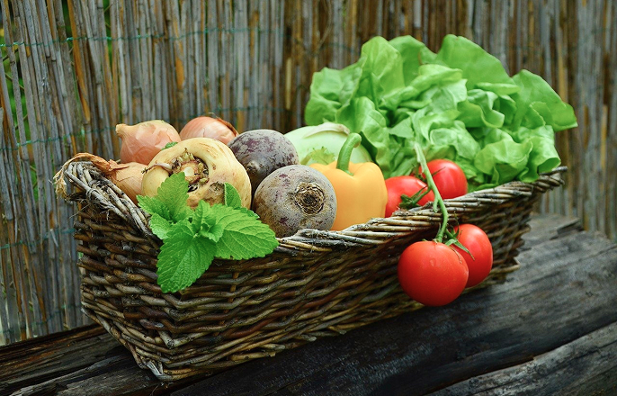
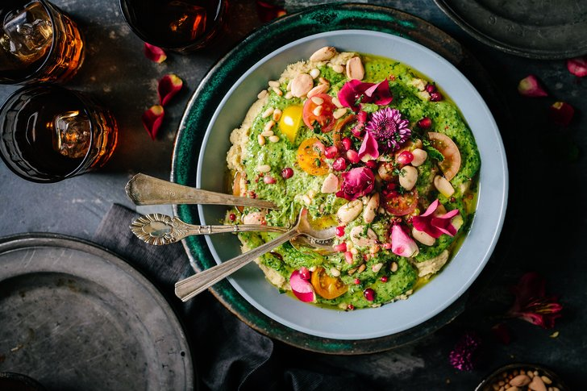
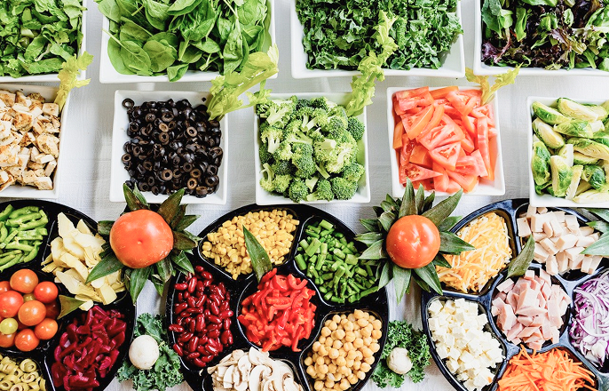
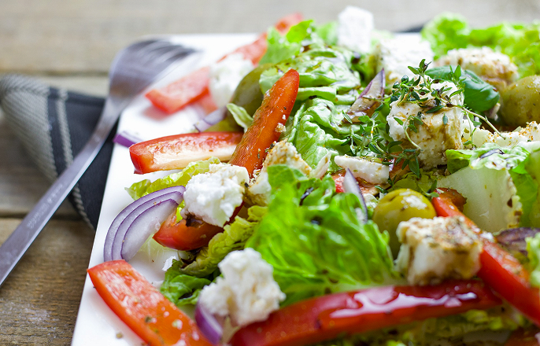
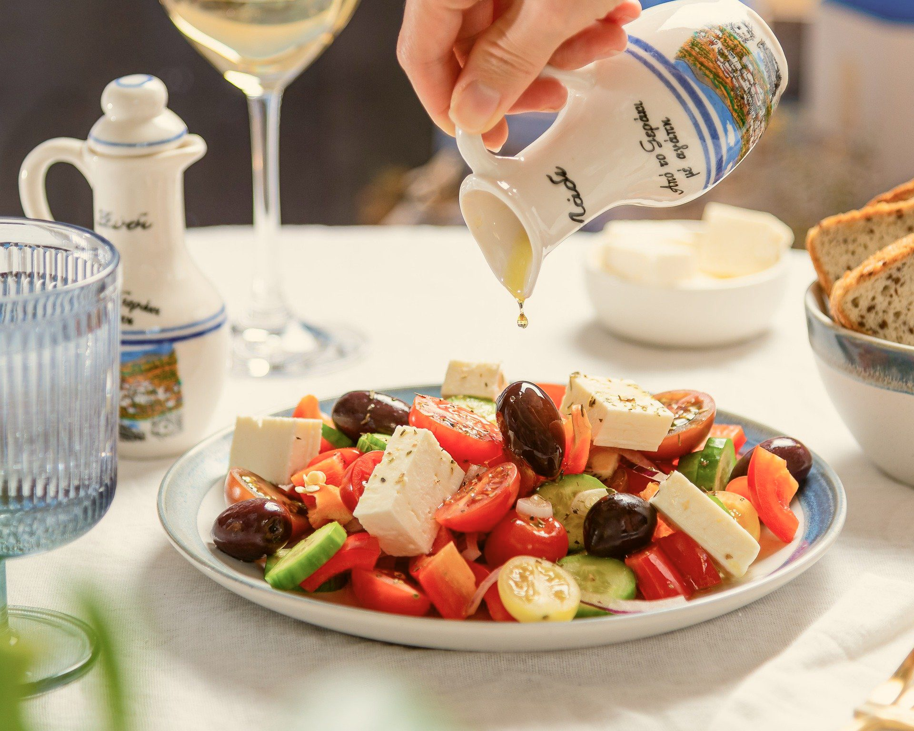
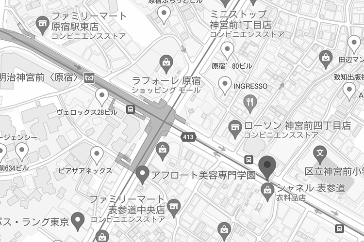
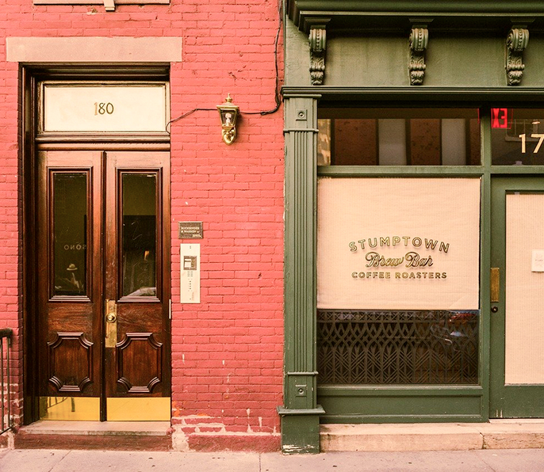
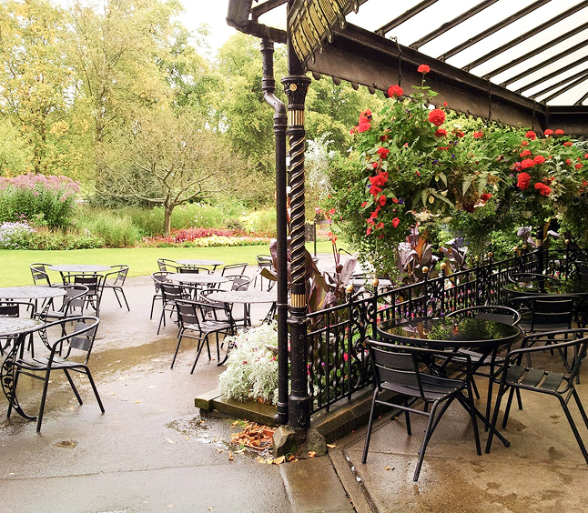

全ての食材が安心の国産
TF Garden Saladの食材は全て産地の公表をしています。信頼できる農家さんから直接買い取り、その日採れたものをその日のうちに厨房へ。


Let's eatdelicious
salad.
健康のためじゃない、「おいしいから食べたい」サラダ
ヘルシーで栄養豊富なサラダは、健康のために
毎日食べようと思っている人は多いはず。
毎日食べるからこそ品質の良い、飽きのこない、
おいしいものを楽しんでいただきたい。
そんな想いからできた「おいしいから食べたい」サラダをあなたにお届けいたします。
TF Garden Saladの食材は全て産地の公表をしています。信頼できる農家さんから直接買い取り、その日採れたものをその日のうちに厨房へ。

定番のメニューに加えてサラダのフルカスタムも可能。お好みのベース×トッピング×ドレッシングを選んであなた好みにアレンジして。

コンビニのサラダチキンに飽きたらこれ！一食でタンパク質20gがとれるトレーニング向けのメニューもご用意してます。



TFGarden Salad（ ガーデンサラダ ）
〒150 - 0000

Dear You.
Have a nice day !!
ご質問などは、下記のフォームよりお問い合わせください。